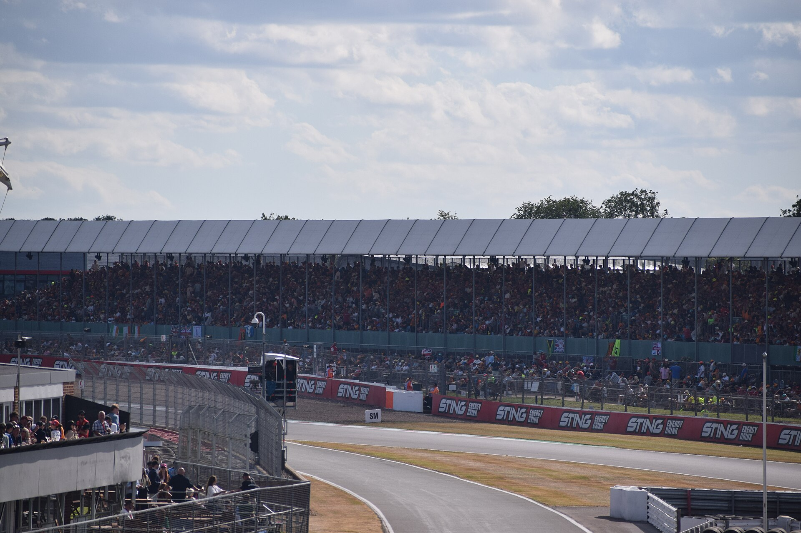
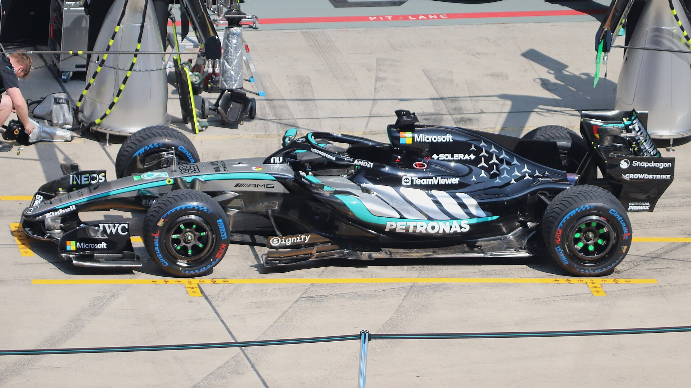
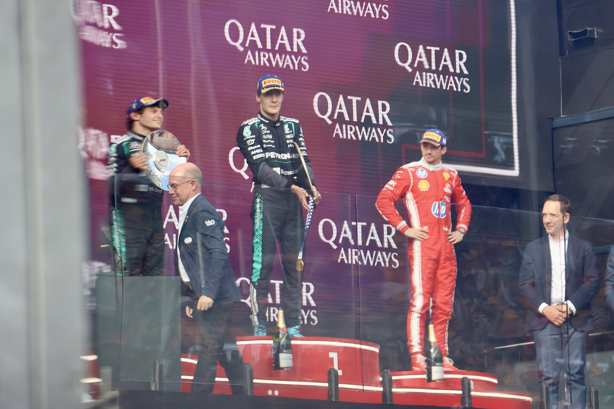
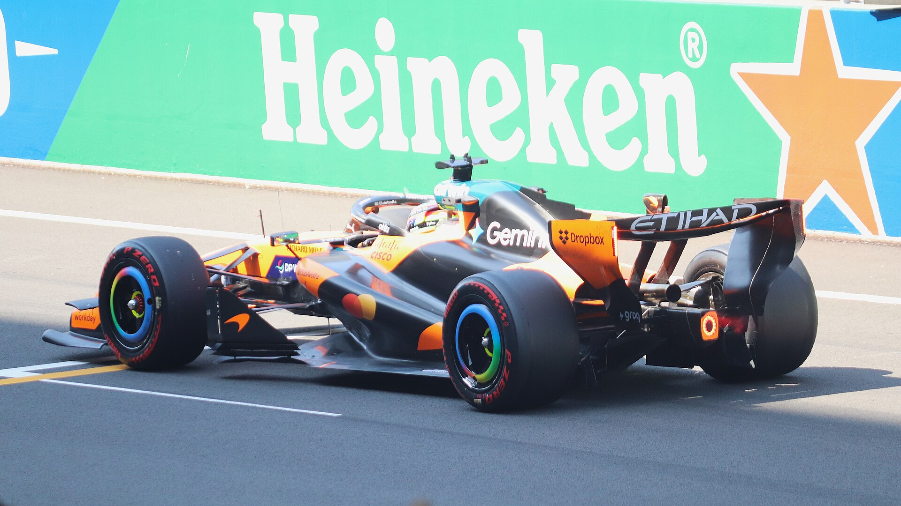
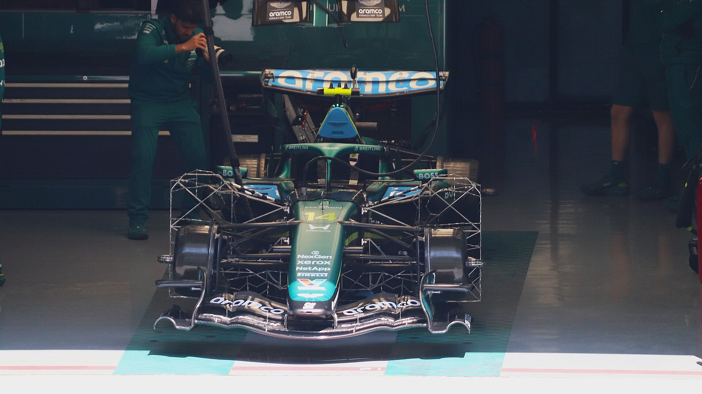
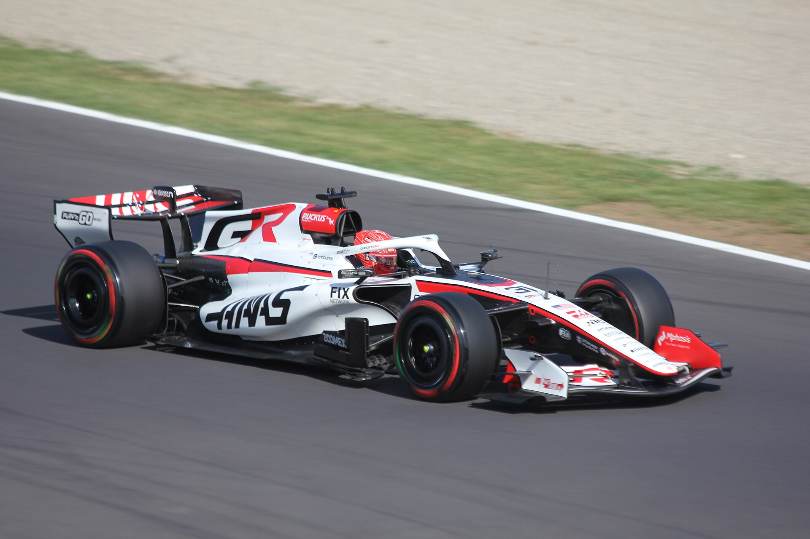
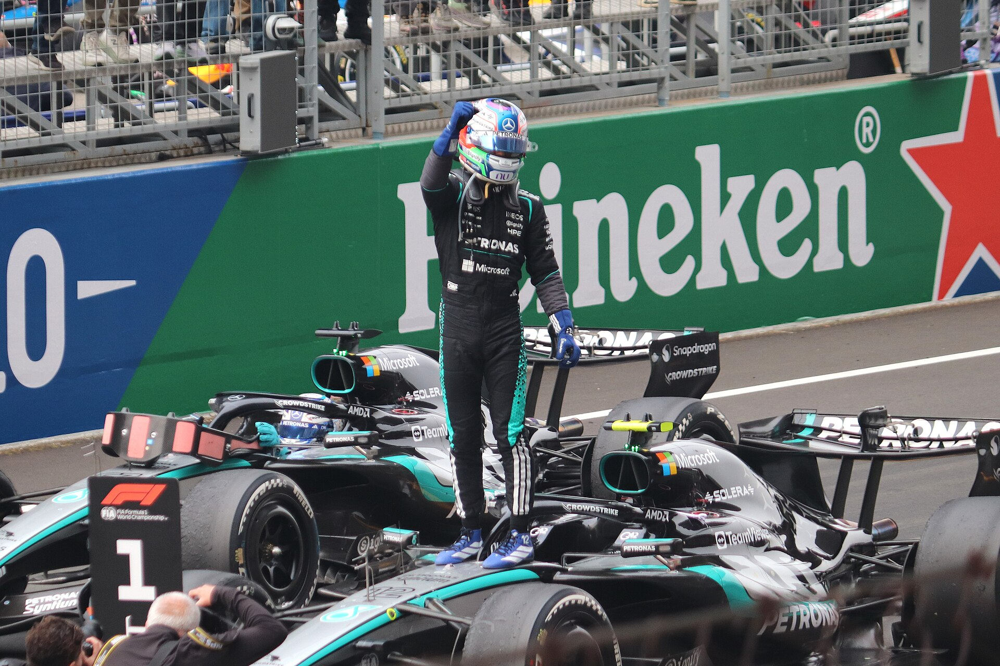
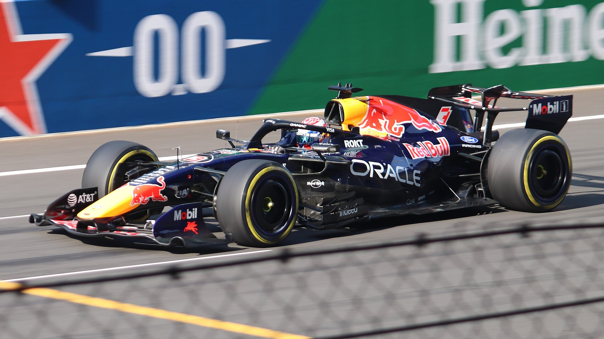
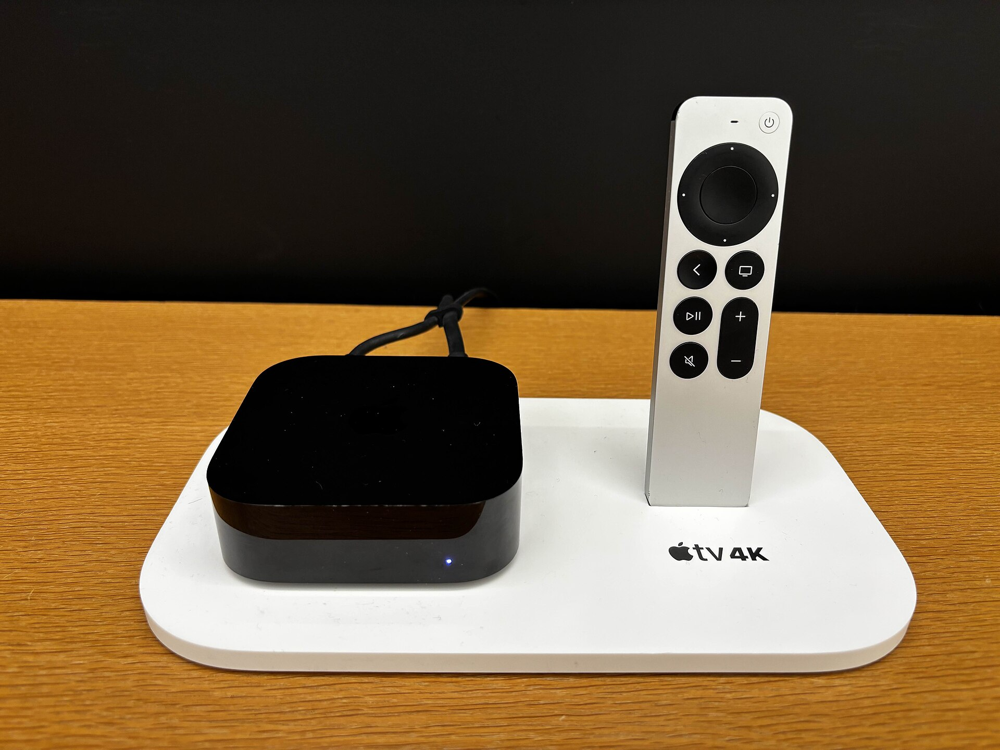

What is Formula 1?
Formula 1 is the top level of open-wheel, single-seater racing in the world, run by the FIA, the sport's governing body. Each team designs and builds its own car, which is the big difference from NASCAR or IndyCar, where the cars are far more standardized. Races happen on permanent circuits and city streets on five continents.
It is a team sport and an engineering contest as much as a driver contest. The strategy chess match is what pulled me in, and the sport gets easy fast once the weekend format and the vocabulary click. That is what this site is for.
Fast facts
- 1950first championship season (British Grand Prix, Silverstone, May 13, 1950)
- 11 / 22teams and drivers in 2026, two cars per team
- 23Grands Prix, from Australia (March 6 to 8) to Abu Dhabi (December 4 to 6)
- 6Sprint weekends with a shorter Saturday race
- 2championships every season: Drivers' and Constructors'
- 305 kmminimum race distance, about 90 minutes, two-hour limit
The sport is governed by the FIA (Fédération Internationale de l'Automobile), which writes and enforces the rulebook. Cadillac, a new American team backed by General Motors, is the 11th team in 2026, and Audi has taken over the former Sauber team as a full works entry. The reigning champions are Lando Norris (drivers, 2025) and McLaren (constructors, 2025). Norris runs the number 1 on his car in 2026, the champion's privilege.

The 2026 cars
2026 is a reset year. The FIA rewrote the technical rules for the first time since 2022, and the changes touch every part of the car. If you are starting to watch now, you are starting at the same time as everyone else's understanding of the new cars.
Smaller and lighter
Minimum weight drops to 768 kg (from 800 kg). The wheelbase is 200 mm shorter at 3.4 m and the floor is 100 mm narrower at 1.9 m. The tires are narrower too, on the same 18-inch wheels.
Half electric
The power unit is still a 1.6-liter turbocharged V6 hybrid, but roughly half its power now comes from the electric motor (the MGU-K, about 350 kW) and half from the combustion engine, which runs on 100 percent sustainable fuel.
Active aerodynamics
For the first time, the front and rear wings move during the lap. Drivers switch between Corner Mode (maximum downforce) and Straight Mode (low drag). Every car gets this on every lap.
Overtake Mode replaces DRS
A driver within one second of the car ahead can unlock an extra 0.5 MJ of electrical energy to attack. The old Drag Reduction System is retired.

Teams, drivers and the two championships
Every team in Formula 1 is called a constructor because it designs and builds its own chassis. Engines are different: only five companies build 2026 power units (Mercedes, Ferrari, Honda, Red Bull Ford Powertrains and Audi), so the other teams buy theirs as customers. Mercedes alone supplies four teams.
Each team runs two cars, and both drivers score points for the team. At the end of the season the driver with the most points is World Champion, and the team with the most combined points wins the Constructors' Championship, which is where the prize money is decided.
Points go to the top ten finishers of every Grand Prix: 25, 18, 15, 12, 10, 8, 6, 4, 2 and 1. Sprint races pay the top eight: 8, 7, 6, 5, 4, 3, 2 and 1. Meet all eleven teams on The 2026 Grid.
A race weekend, step by step
A standard Grand Prix weekend is three days and five sessions. Once you know the shape of it, every weekend feels the same.

1. Friday: Free Practice 1 and 2
Two one-hour sessions. Teams test setups, try the tire compounds and gather data. Nothing counts toward the result.

2. Saturday morning: Free Practice 3
One more hour, usually the first honest look at who is fast on a single lap.

3. Saturday afternoon: Qualifying
A three-round knockout (Q1, Q2, Q3) that sets Sunday's starting grid. The fastest driver in Q3 takes pole position.

4. Sunday: the Grand Prix
A formation lap, then a standing start when five red lights go out. About 305 km, at least one pit stop, and the top ten score points.

5. Sprint weekends
Six in 2026. Friday has one practice and Sprint Qualifying; Saturday opens with a 100 km Sprint that pays points to the top eight, then normal Qualifying.
The 2026 season at a glance
Twenty-three rounds on five continents. The Bahrain and Saudi Arabian Grands Prix were cancelled in March because of the war in the Middle East; Bahrain was later rescheduled to Sepang in Malaysia. Madrid hosts a Grand Prix for the first time this year on a new street circuit.
| Rd | Grand Prix | Circuit / city | Race weekend | Sprint |
|---|---|---|---|---|
| 1 | Australia | Melbourne | Mar 6 to 8 | |
| 2 | China | Shanghai | Mar 13 to 15 | Yes |
| 3 | Japan | Suzuka | Mar 27 to 29 | |
| 4 | Miami | Miami | May 1 to 3 | Yes |
| 5 | Canada | Montreal | May 22 to 24 | Yes |
| 6 | Monaco | Monte Carlo | Jun 5 to 7 | |
| 7 | Barcelona-Catalunya | Barcelona | Jun 12 to 14 | |
| 8 | Austria | Spielberg | Jun 26 to 28 | |
| 9 | Great Britain | Silverstone | Jul 3 to 5 | Yes |
| 10 | Belgium | Spa-Francorchamps | Jul 17 to 19 | |
| 11 | Hungary | Budapest | Jul 24 to 26 | |
| 12 | Netherlands | Zandvoort | Aug 21 to 23 | Yes |
| 13 | Italy | Monza | Sep 4 to 6 | |
| 14 | Spain | Madrid (new street circuit) | Sep 11 to 13 | |
| 15 | Azerbaijan | Baku | Sep 24 to 26 | |
| 16 | Bahrain (held in Malaysia) | Sepang | Oct 2 to 4 | |
| 17 | Singapore | Marina Bay | Oct 9 to 11 | Yes |
| 18 | United States | Austin | Oct 23 to 25 | |
| 19 | Mexico | Mexico City | Oct 30 to Nov 1 | |
| 20 | Brazil | São Paulo | Nov 6 to 8 | |
| 21 | Las Vegas | Las Vegas | Nov 19 to 21 | |
| 22 | Qatar | Lusail | Nov 27 to 29 | |
| 23 | Abu Dhabi | Yas Marina | Dec 4 to 6 |

How to watch in the US
Starting with the 2026 season, Apple TV is the exclusive home of Formula 1 in the United States. Every practice session, qualifying session, Sprint and Grand Prix streams live and on demand with an Apple TV subscription, which also includes F1 TV Premium (onboard cameras, team radio and live timing). Without a subscription you can still watch all practice sessions and a handful of selected races for free in the Apple TV app.
Because most races are in Europe and Asia, US start times are usually morning or early afternoon on the East Coast: a European race at 3 PM local time is 9 AM Eastern.
Start here
Read this page once. Keep the Glossary open on your phone during your first race and look things up as you hear them. Then use the Grid page to pick a team or a driver to follow, because rooting for someone is what makes the sport stick. If you want a first race to watch, pick the Italian Grand Prix at Monza: fast, loud, and the crowd is unreal.
The 2026 Grid
All eleven teams and 22 drivers, one card each, with the team colors.
Glossary & Rulebook
Every word the commentators use without explaining, plus tires, points, penalties and flags.